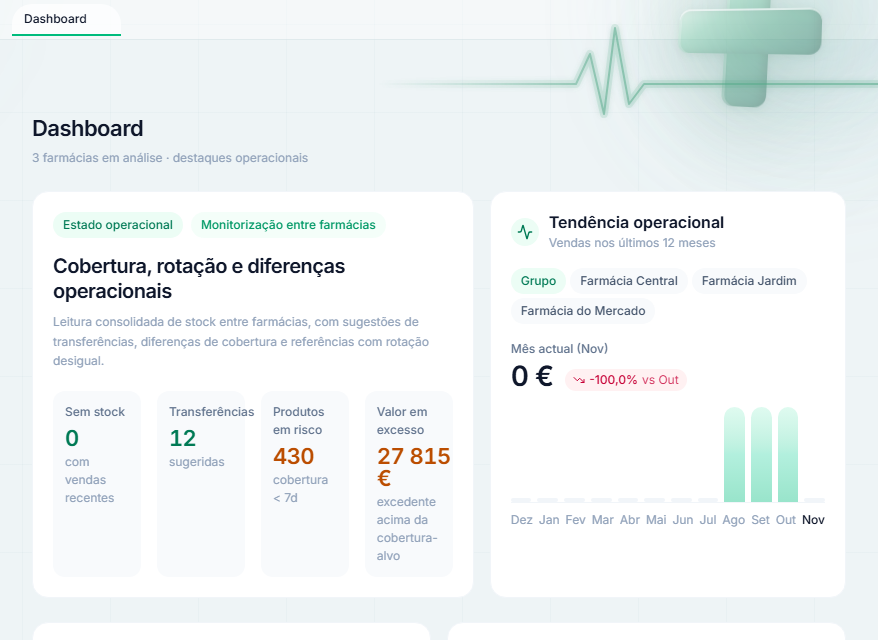
Como entrar, como se organiza o menu e o que mostra o ecrã inicial.
As instruções são numeradas. Os números vermelhos sobre as imagens indicam os campos a que o texto se refere. Os nomes de botões e campos aparecem em negrito, tal como no ecrã. Todas as imagens usam dados de exemplo.
Esta caixa aparece quando uma função só está disponível a alguns perfis (Administrador, Gestor de grupo, Gestor de farmácia, Operador) ou a alguns grupos de farmácias.
Sugestão para trabalhar mais depressa.
Aviso sobre algo que pode induzir em erro.
Para que serve. Entrar na aplicação, perceber o menu e saber até quando os dados de cada farmácia estão atualizados.
Se faltar um dos campos, aparece «Preencha o email e a password.». Se os dados não estiverem certos, aparece «Credenciais inválidas.».
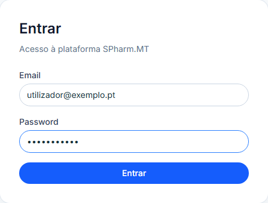
O menu está à esquerda e organiza-se em secções: Operação (Stock, Devoluções), Relatórios (Vendas, Manutenção de Vendas, Inventário, Margens), Decisão (Encomendas, Transferências, Excessos), Catálogo, Configurações e A minha conta. O ecrã onde está fica destacado, e o seu nome aparece no cabeçalho.
No fundo do menu está o bloco Última atualização (secção 1.3) e, por baixo, o seu nome e perfil.
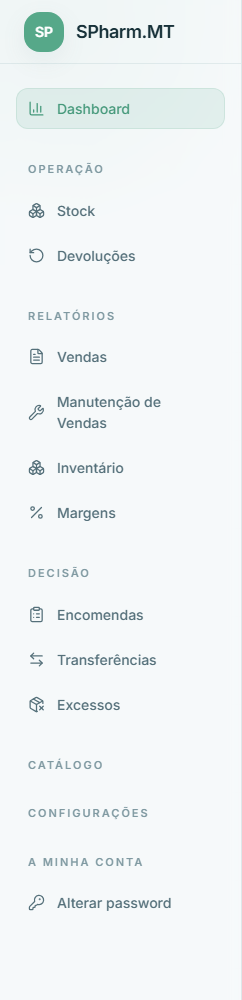
Mostra, para cada farmácia a que tem acesso, o nome e a data e hora da última atualização concluída dos dados dessa farmácia. É a data em que os dados chegaram, não a hora a que abriu o programa.
O Administrador e o Gestor de grupo veem todas as farmácias. O Gestor de farmácia e o Operador veem só a sua.
Em ecrãs pequenos o menu fica escondido. Toque no botão de menu, no canto superior esquerdo, para o abrir. O menu abre com as mesmas opções e com o bloco «Última atualização» no fundo. Fecha com a tecla Esc e fecha-se sozinho quando escolhe um ecrã. Se o menu for comprido, desloque-o na vertical.
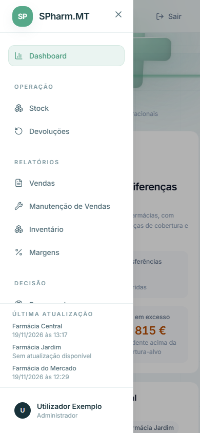
A nova password tem de ter pelo menos 10 caracteres e a confirmação tem de ser igual. Caso contrário, o ecrã explica o que falta.
Para que serve. Ver de relance o estado do stock do grupo e saltar para o ecrã onde tratar cada situação.
Cobertura é o número de dias de vendas que o stock atual cobre (ver glossário no capítulo 15).
O trabalho do dia a dia: consultar stock, tratar devoluções e manter o catálogo de produtos.
Para que serve. Consultar o stock atual de cada artigo, por farmácia, e abrir a ficha completa do artigo.
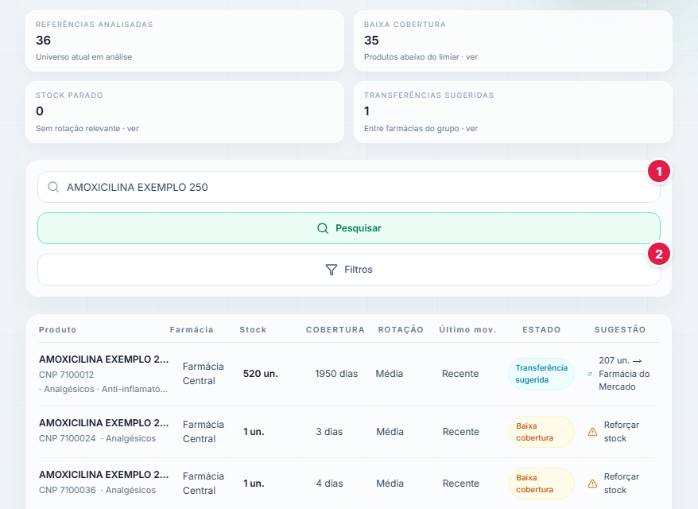
O ecrã abre vazio («Pesquise ou filtre para ver os artigos»). Os quatro cartões do topo (Referências analisadas, Baixa cobertura, Stock parado, Transferências sugeridas) resumem o universo e, ao clicar em «Baixa cobertura», a lista fica filtrada por esse estado.
Cada linha mostra o produto, a farmácia, o Stock (unidades), a Cobertura, a Rotação, o Último mov., o Estado (Estável, Baixa cobertura, Parado ou Transferência sugerida) e a Sugestão.
O stock mostrado é sempre o stock atual, não o de uma data passada.
O botão Criar produto só aparece ao Administrador e ao Gestor de grupo (ver capítulo 5).
Ao clicar num produto, a ficha abre num painel à direita, sem sair do ecrã onde está. Para a ver em página inteira, clique em Manter como tarefa.
Os botões Editar designação, Editar (fabricante) e Editar nome do fabricante só existem para o Administrador e o Gestor de grupo. O último só existe em alguns grupos.
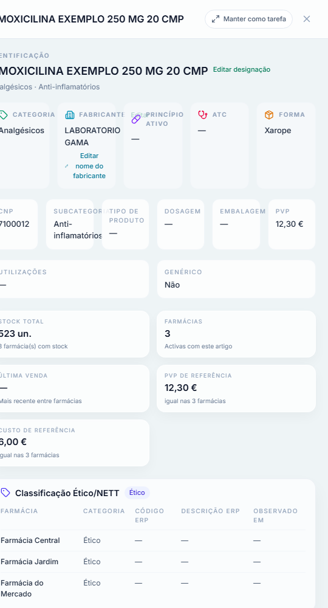
Na ficha em página inteira, o Extrato de movimentos lista os movimentos do artigo: Data, Documento, Tipo (por exemplo Venda, Compra / Recepção ou Acerto de stock), Cliente / Fornecedor, Qtd e Stock depois. Use os botões de tipo, o filtro de farmácia e os campos Desde e Até, e clique em Atualizar. No fim aparece o total do período.
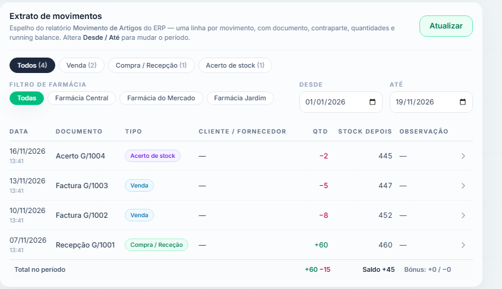
Para que serve. Ver as devoluções a fornecedores, agrupadas por fornecedor.
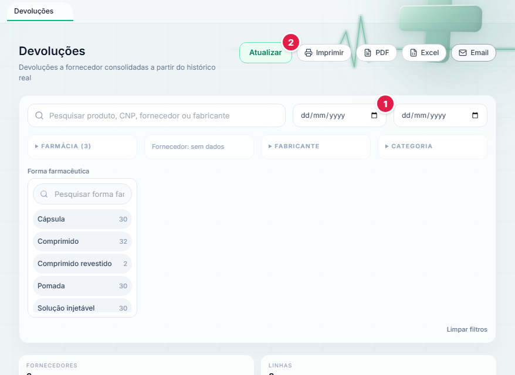
O resultado mostra quatro totais — Fornecedores, Linhas, Unidades e Valor — e, a seguir, um bloco por fornecedor com Data, Produto, Farmácia, Fabricante, Qtd., Valor e Motivo. Para imprimir ou exportar, ver o capítulo 12.
Para que serve. Consultar os dados de cada produto, independentemente do stock de cada farmácia, e criar fichas de produto novas.
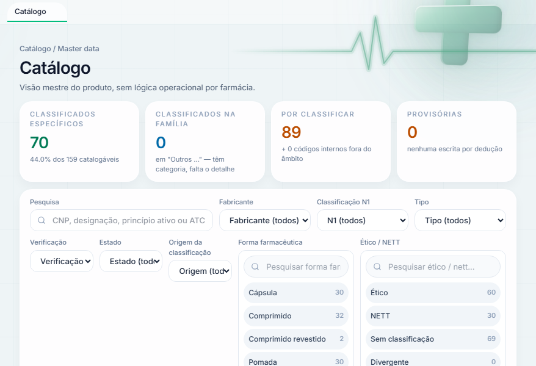
No topo, quatro cartões resumem a classificação dos produtos: Classificados específicos, Classificados na família, Por classificar e Provisórias. Por baixo, os filtros: Pesquisa (CNP, designação, princípio ativo ou ATC), Fabricante, Classificação N1, Tipo, Verificação, Estado, Origem da classificação, Forma farmacêutica, Ético / NETT e Genérico. A tabela mostra CNP, produto, fabricante, classificação, tipo, ATC, PVP mínimo e verificação. Clique num produto para abrir a respetiva ficha.
A nova designação passa a ser usada em todas as farmácias do grupo, e a atualização automática do ERP (o programa de gestão da farmácia) deixa de a substituir.
Só o Administrador e o Gestor de grupo podem editar. Os outros perfis não veem o botão.
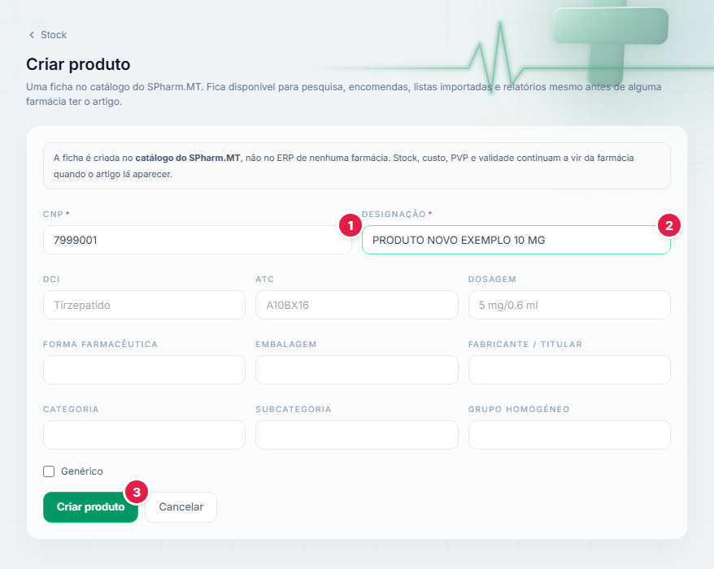
Se faltar um campo obrigatório, o ecrã avisa («CNP em falta ou inválido.», «Designação obrigatória.»). Ao criar, abre a ficha do produto no Catálogo, com o estado Pendente e a indicação de que não está registado em nenhuma farmácia. O produto passa a aparecer na pesquisa do Catálogo, mas só aparece no Stock quando uma farmácia o tiver. Se o CNP já existir, abre-se o produto existente, sem alterar a sua designação.
Só o Administrador e o Gestor de grupo podem criar produtos.
Vendas, margens e inventário: gere o relatório, veja o resultado e, se precisar, imprima ou exporte.
Todos seguem o mesmo caminho: escolher o período e os filtros, clicar em Gerar e consultar o resultado. Depois de gerado, o botão passa a Atualizar e aparecem Imprimir PDF Excel Email. Estes botões, e os filtros comuns, estão explicados uma só vez nos capítulos 12 e 13.
Para que serve. Ver, artigo a artigo, as unidades vendidas mês a mês, o stock atual e o custo estimado, para uma farmácia, várias ou o grupo todo.
Qualquer perfil gera o relatório. Com o âmbito «Grupo», o botão «Criar encomenda com estes produtos» só está ativo para o Administrador e o Gestor de grupo.
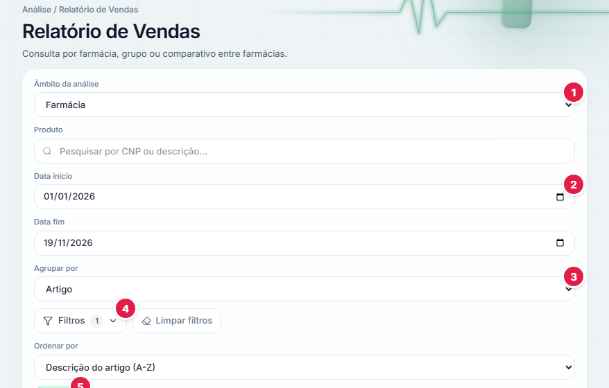
Opções rápidas. Por omissão estão ligadas Apenas com vendas, Incluir stock sem vendas e Incluir totais. Estão desligadas Incluir manutenção de vendas (soma ao relatório as quantidades registadas em Manutenção de Vendas, ver 6.5) e Apenas artigos com PVP diferente entre farmácias.
Aparece um resumo (linhas, unidades, valor, stock total, custo estimado e média diária) e uma tabela com uma linha por artigo e farmácia, com uma coluna por mês. Quando um artigo existe em várias farmácias, a seguir às suas linhas aparece o total do artigo; o total geral fica no fim.
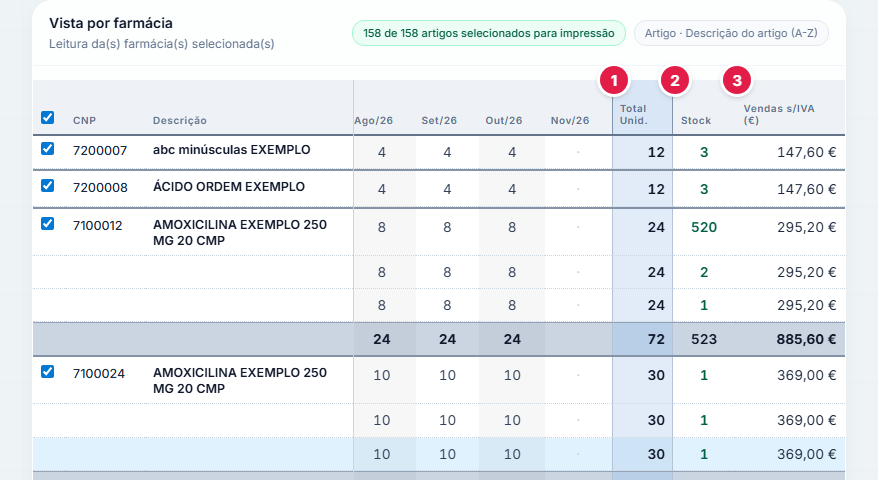
A coluna Stock mostra o stock atual, à data em que gerou o relatório, não o stock do período. Quando o custo de um artigo não é conhecido, aparece «—» e o resumo indica «parcial · N sem custo».
O campo Agrupar por só agrupa quando o Âmbito da análise está em Grupo. Com o âmbito em Farmácia, a tabela continua a mostrar uma linha por artigo.
Com o âmbito em Grupo, Categoria soma as vendas por categoria; Grupo soma por subcategoria e, se o artigo não tiver subcategoria, usa a categoria. Os artigos sem classificação ficam em Por Classificar. Exemplo, num grupo com 10 artigos só com a categoria «Analgésicos», 10 com a categoria «Analgésicos» e a subcategoria «Anti-inflamatórios», e os restantes sem classificação: «Grupo» mostra Analgésicos (10 artigos), Anti-inflamatórios (10) e Por Classificar; «Categoria» mostra Analgésicos (20) e Por Classificar.
São enviados os produtos que estão visíveis nesse momento, já com os filtros e as opções aplicados. A quantidade a encomendar é calculada no ecrã Encomendas.
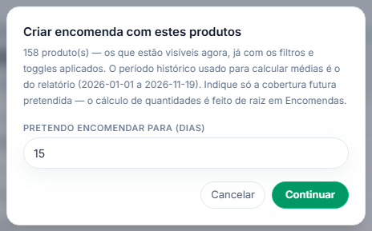
Serve para registar quantidades adicionais de um artigo, distribuídas por farmácia e por mês, separadas das vendas reais. Só entram no relatório de Vendas se ligar Incluir manutenção de vendas.
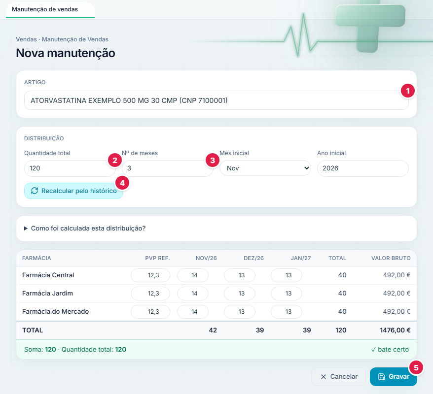
A manutenção gravada aparece na lista (separadores Ativas, Anuladas e Todas), com as ações Editar e Anular.
Manutenção de Vendas está disponível ao Administrador, ao Gestor de grupo e ao Gestor de farmácia. O Operador volta ao Dashboard.
Para que serve. Calcular a margem das vendas de um período, por produto, categoria, farmácia, grupo ou fabricante. A margem é calculada sem IVA: preço de venda sem IVA menos o preço médio de compra (PMC).
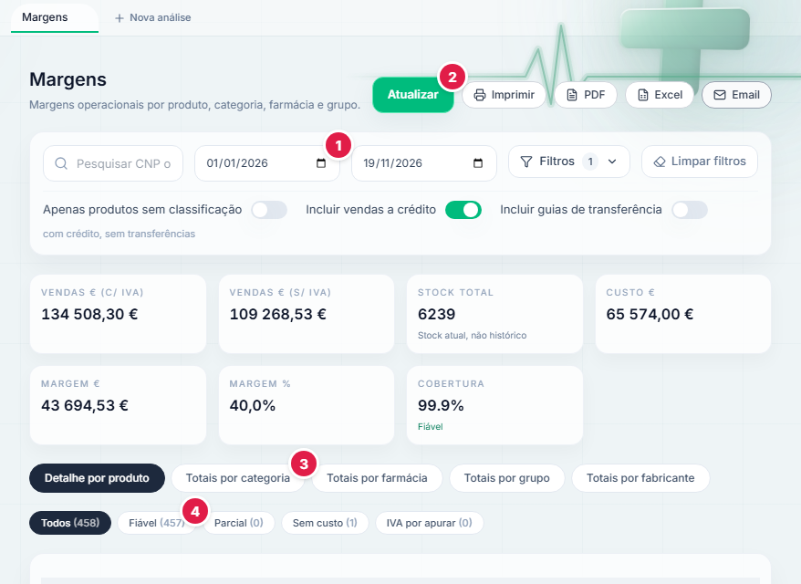
Os indicadores do topo são Vendas € (c/ IVA), Vendas € (s/ IVA), Stock total, Custo €, Margem €, Margem % e Cobertura. Os botões de estado filtram a tabela: Fiável, Parcial, Sem custo e IVA por apurar. Este último aparece quando a taxa de IVA do artigo não é 6%, 13% ou 23%: nesse caso a margem não é calculada.
Se mudar o período ou um filtro depois de gerar, aparece «Existem alterações por aplicar». O relatório só muda quando clicar em Atualizar. O Stock é o stock atual, não o histórico.
Clique no símbolo à esquerda de um artigo para ver os outros artigos com o mesmo CNPEM. CNPEM é o Código Nacional para a Prescrição Eletrónica de Medicamentos, definido na Portaria n.º 224/2015, de 27 de julho. Aparece a indicação «Mesmo CNPEM … — N outros artigos nas farmácias selecionadas» e a opção Mostrar todos os artigos do mesmo CNPEM, que inclui os que não tiveram vendas no período.
Para que serve. Ver o stock atual valorizado, por produto, farmácia, grupo ou taxa de IVA. Não tem datas: é um retrato do stock de agora.
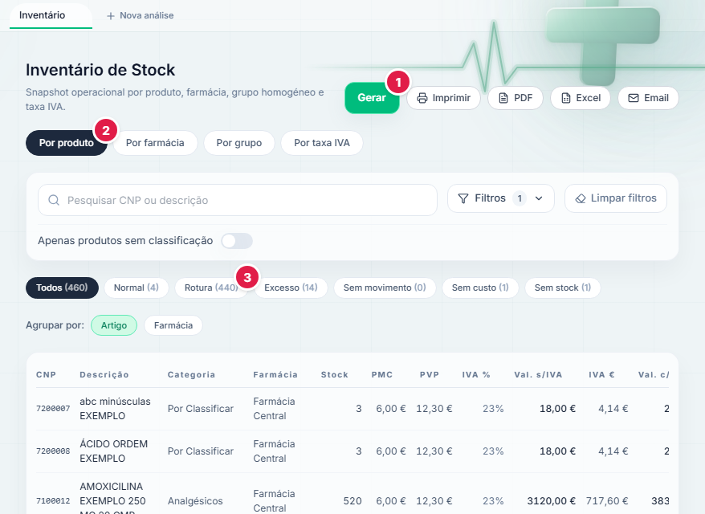
A tabela mostra o stock, o PMC, o PVP, o IVA, o valor do stock sem IVA (stock × PMC), o IVA, o valor com IVA, a cobertura e o estado. Quando a taxa de IVA do artigo não é 6%, 13% ou 23%, o valor com IVA não é calculado e o artigo fica em «IVA por apurar».
Onde decide o que fazer ao stock: onde há excesso, o que transferir entre farmácias e o que encomendar.
Para que serve. Identificar stock acima da necessidade estimada de cada farmácia, mesmo quando nenhuma outra farmácia precisa dele.
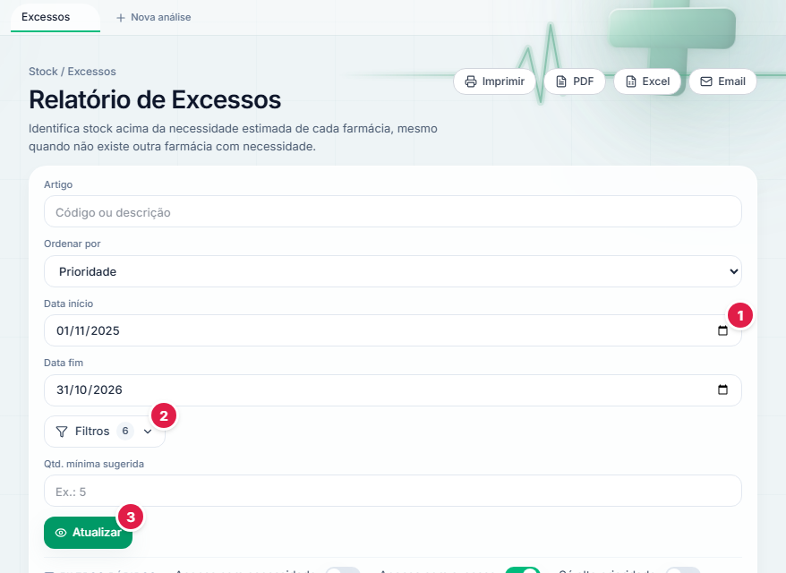
O resumo indica o número de excessos, unidades e referências. A tabela tem, por artigo e farmácia de origem: St. O. (stock na origem), Vendas 6M, Méd./mês, Cob. O. (cobertura na origem), Excesso, PVP, Custo, € custo exc. (capital imobilizado na sobra), € PVP exc. (quanto a sobra valeria vendida) e, quando existe, o destino possível (Destino poss., St. D., Cob. D., Necess., Sug.). O separador Relatório mostra a mesma informação em formato de documento, com a(s) farmácia(s) selecionada(s) e a data de hoje.
Para que serve. Sugerir redistribuições de stock entre farmácias quando há excesso numa e necessidade noutra, e registar essas transferências.
Transferências está disponível ao Administrador, ao Gestor de grupo e ao Gestor de farmácia. O Operador volta ao Dashboard.
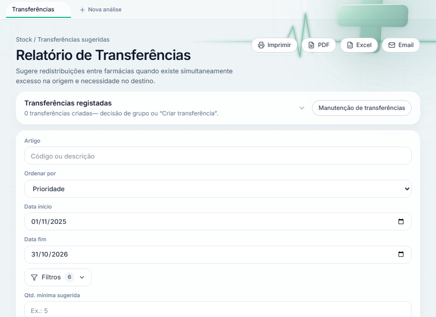
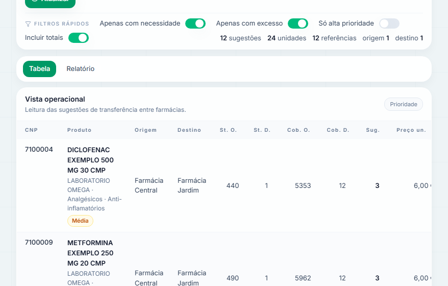
A transferência fica registada com o estado Finalizada e passa a constar em Transferências registadas, no topo do ecrã, e na Manutenção de transferências.
O Preço un. é o custo na farmácia de origem, não o PVP: uma transferência interna não é uma venda.
Clique em Manutenção de transferências para ver as transferências já criadas, com número (por exemplo TR-000001), origem e destino, estado, quem criou, datas, referências e unidades. Pode procurar por número e filtrar por origem, destino, estado (Rascunho, Finalizada, Anulada, Eliminada) e datas. Cada linha tem as ações Consultar, Documento, Duplicar e Anular.
O ecrã Oportunidades abre-se pelo cartão Encomendas evitáveis do Dashboard. Lista as situações em que um artigo está quase sem stock numa farmácia e há stock a mais do mesmo artigo (mesmo CNP) noutra, indicando o destino, a origem e as unidades. Clique em Criar transferência e confirme: a transferência é criada e abre-se o ecrã Transferências.
Para que serve. Gerar uma proposta de encomenda a partir das vendas, rever as quantidades e finalizar.
Encomendas está disponível ao Administrador, ao Gestor de grupo e ao Gestor de farmácia. O Operador volta ao Dashboard.
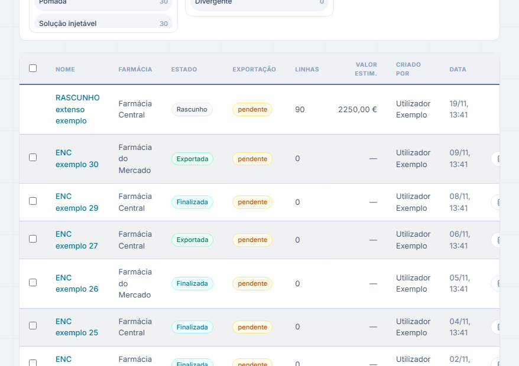
Pode procurar por nome e filtrar por farmácia, estado (Rascunho, Finalizada, Exportada, Anulada), datas e pelos filtros comuns (Forma farmacêutica, Ético / NETT, Genérico). As encomendas anuladas ficam escondidas, a menos que marque Mostrar encomendas anuladas. Num Rascunho existem as ações Continuar, Finalizar e Eliminar; nas encomendas já finalizadas, Documentos, Duplicar e Anular.
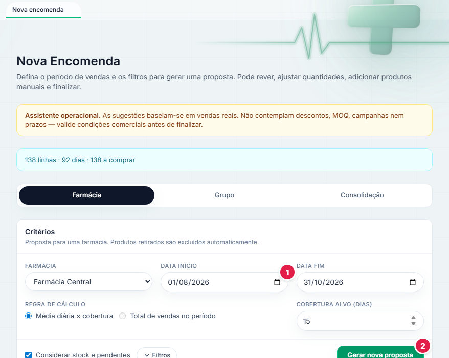
As sugestões baseiam-se em vendas reais e não contemplam descontos, MOQ (quantidade mínima de encomenda), campanhas nem prazos. Valide as condições comerciais antes de finalizar.
O que se repete em vários ecrãs: imprimir e exportar, filtrar e trabalhar com vários separadores.
Para que serve. Levar um relatório para fora do ecrã. Os quatro botões existem em Vendas, Margens, Inventário, Excessos, Transferências e Devoluções, e ficam disponíveis depois de gerar o relatório.
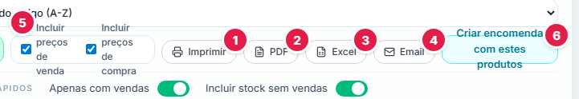
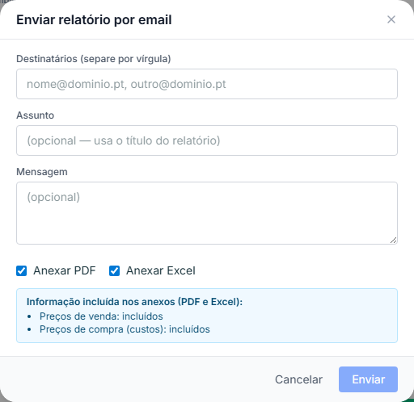
No relatório de Vendas, as caixas Incluir preços de venda e Incluir preços de compra aparecem depois de gerar. Se desligar uma delas, o relatório impresso, o PDF, o Excel e o email saem sem os preços de venda ou sem os custos. A tabela no ecrã não muda.
Antes de enviar um relatório a alguém de fora da farmácia, desligue «Incluir preços de compra». A janela de email confirma o que vai nos anexos («Preços de compra (custos): incluídos / não incluídos»).
Os documentos das encomendas e das transferências têm os seus próprios botões (Imprimir, PDF e Email, e Excel nas encomendas), descritos nos capítulos 10 e 11.
Para que serve. Restringir um relatório ou uma lista. O botão Filtros abre o painel; o número ao lado indica quantos filtros estão ativos.
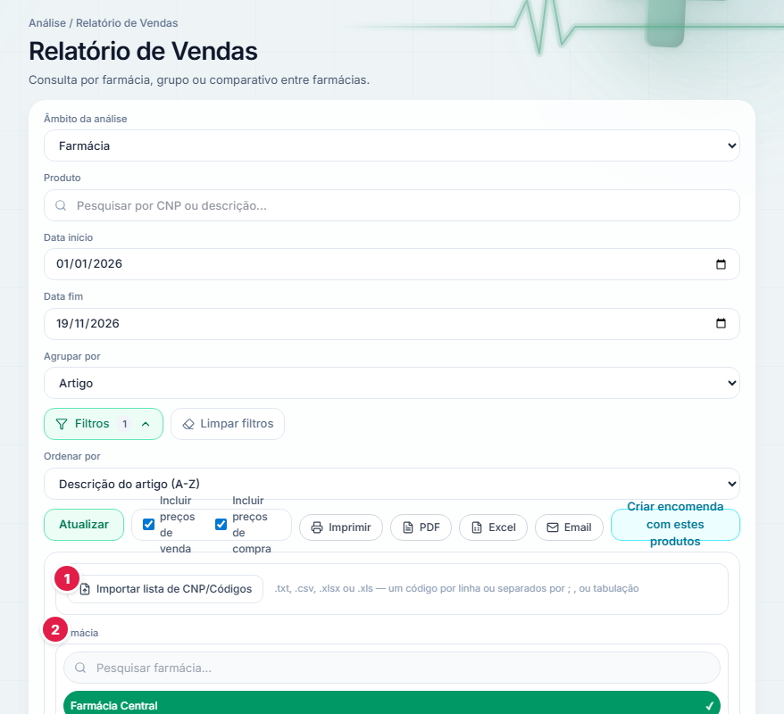
| Filtro | O que faz |
|---|---|
| Farmácia | Escolhe as farmácias incluídas. Por omissão estão todas. Em Excessos e Transferências há Farmácia origem e Farmácia destino. |
| Fabricante, Distribuidor, Categoria, Subcategoria, Utilização | Restringem aos produtos dos valores escolhidos. A lista mostra só os valores existentes. |
| Forma farmacêutica | Por exemplo Cápsula, Comprimido ou Xarope. Cada valor mostra quantos produtos tem. |
| Ético / NETT | Ético, NETT, Sem classificação ou Divergente (as farmácias do grupo têm classificações diferentes). |
| Genérico | Todos, Apenas genéricos ou Apenas não genéricos, com a contagem de cada um. |
| Importar lista de CNP/Códigos | Restringe o relatório aos códigos de um ficheiro (.txt, .csv, .xlsx ou .xls), com um código por linha ou separados por «;», «,» ou tabulação. O ecrã diz quantos códigos leu, quantos produtos encontrou, quantos duplicados e quantos não encontrou. Limpar lista remove-a. |
Com a lista de códigos pode analisar só os produtos de uma campanha ou de um fornecedor sem os escolher um a um. Exemplo: uma lista de 4 códigos, em que 3 existem, gera um relatório com 3 produtos e o ecrã avisa que 1 código não foi encontrado.
Onde existe cada filtro. Vendas, Margens, Inventário, Excessos, Transferências e Nova encomenda têm o painel completo (a lista de códigos existe em Vendas, Margens, Inventário e Nova encomenda). O Stock tem Farmácia, Cobertura, Estado, Categoria, Subcategoria, Utilização, Forma farmacêutica, Ético / NETT e Genérico. As Devoluções têm Farmácia, Fornecedor, Fabricante, Categoria e Forma farmacêutica. A lista de Encomendas tem Forma farmacêutica, Ético / NETT e Genérico.
Para que serve. Trabalhar em vários ecrãs, ou em várias análises do mesmo relatório, sem perder o que tem aberto.
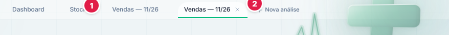
Use «Nova análise» para ver, por exemplo, as vendas do trimestre atual e do trimestre anterior em separadores diferentes, sem repetir os filtros.